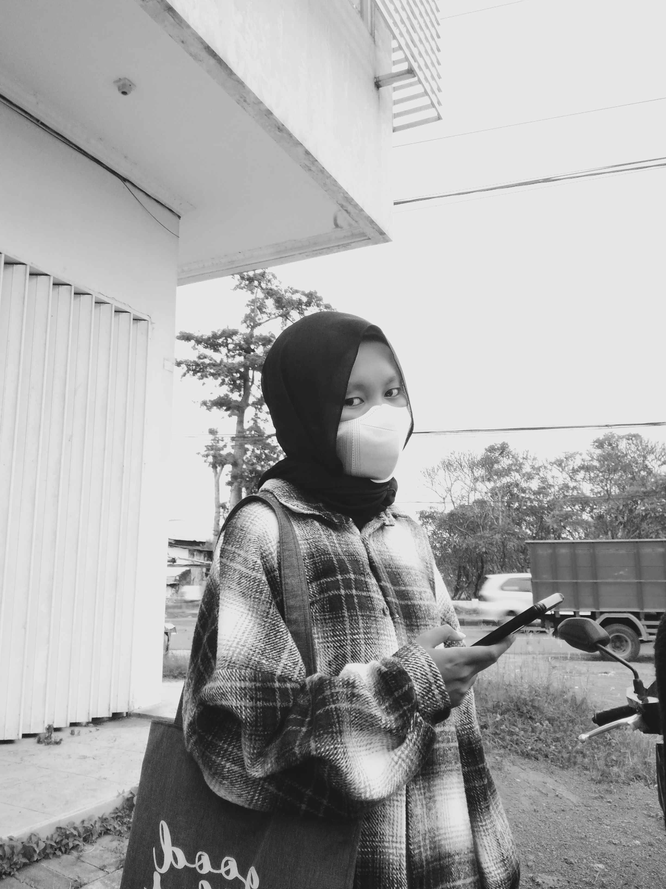

Siti Shela Nuraziza
Perkanalkan saya seorang mashasiswa Teknik Informatika dari Universitas Yudharta Pasuruan.
Alasan saya masuk Teknik Informatika karena prospek kerja yang luas
saya tertarik dibidang IT karena ingin mengetahui lebih luas bidang IT